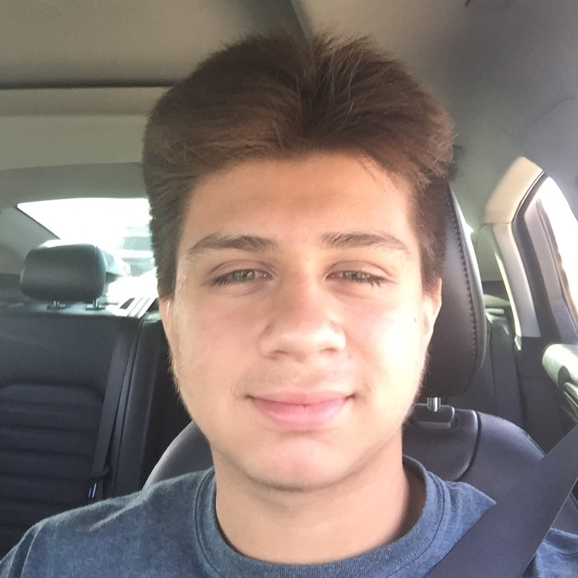
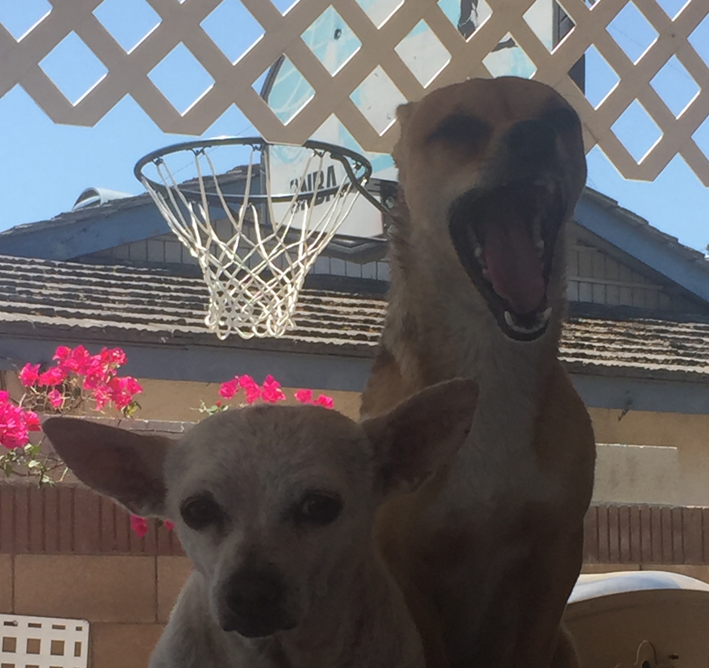

Hello my name is Anthony Carl Martinez, I have been attending Rowland High School for three years now.
 Some of my favorite hobbies include:
-playing video games
-hanging out with friends
-going to the movies
-working out at the gym
-eating bizarre foods
I have three years of experience in Spanish, and I've been taking A.V.I.D. for three years as well.
I'm Mexican-American, 16, have one sister, my two parents, and two dogs.
I decided to take an AP computer science priciples class for this year because I really wanted to learn how to create programms, websites (such as this one), code in general and more.
Some of my best friends include Daniel Hernandez, Nathan Cruz, Joshua Bicera, Isaiah Galindo, Marcus Galindo and much more.
Some of my regular friends are Ryan Blanco.